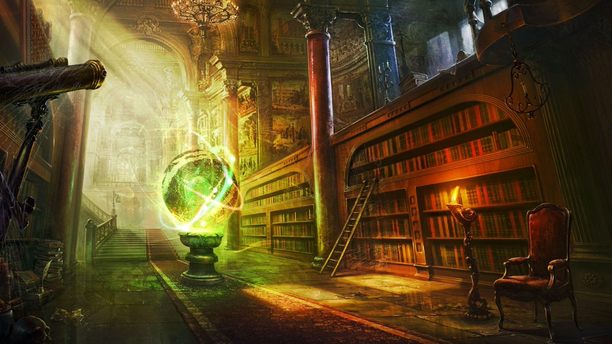

INICIO


Hola viajero, bienvenido a Bestiarium. Aquí yace el códex con toda la información que necesitas saber sobre las criaturas de nuestro mundo, antes de aventurarte a explorar. No tengas miedo, no todos los seres mágicos son dañinos y tenebrosos. Algunos de ellos están de nuestra parte. Es esencial saber su afiliación elemental y su naturaleza benevolente antes de cualquier interacción. Esta información ha sido estudiada y comprobada muchas veces, no hay márgenes para errores. Pero si para el nuevo conocimiento que desees agregar a nuestra enciclopedia libre. Por favor, siéntete libre de escribirnos para agregar información de las bestias, sin duda investigaremos cada uno de los aportes. Sin más, disfruta de tu estancia en Bestiarium.